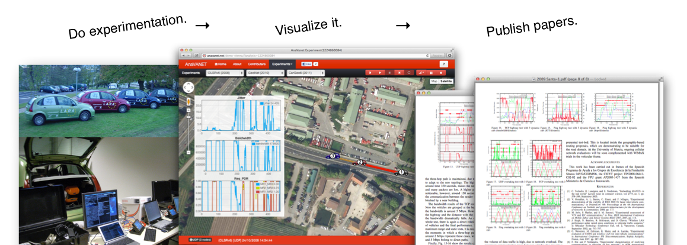

An Experiment and visualization tool for vehicular networks.

What's AnaVANET
AnaVANET is a tool developed at INRIA with Murcia University to analyze vehicular networks. It has originally been used to evaluate OLSR-based ad-hoc vehicular networks. Then, AnaVANET has been extended in order to analyze IPv6 packets transmitted with a GeoNetworking header and NEMO header.
Examples
Real field evaluation is performed with the the following equipments with a test fleet of four conventional vehicles.
View details » See live demo »Contributors
See three main contributors of AnaVANET. Manabu Tsukada (INRIA, fr), José Santa (UMU, es) and Satoshi Matsuura (NAIST, jp), and more